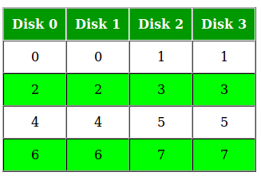

RAID, or “Redundant Arrays of Inexpensive Disks” is a technique which makes use of a combination of multiple disks instead of using a single disk for increased performance, data redundancy or both. The term was coined by David Patterson, Garth A. Gibson, and Randy Katz at the University of California, Berkeley in 1987.
Why data redundancy?
Data redundancy, although taking up extra space, adds to disk reliability. This means, in case of disk failure, if the same data is also backed up onto another disk, we can retrieve the data and go on with the operation. On the other hand, if the data is spread across just multiple disks without the RAID technique, the loss of a single disk can affect the entire data.
Key evaluation points for a RAID System
- Reliability: How many disk faults can the system tolerate?
- Availability: What fraction of the total session time is a system in uptime mode, i.e. how available is the system for actual use?
- Performance: How good is the response time? How high is the throughput (rate of processing work)? Note that performance contains a lot of parameters and not just the two.
- Capacity: Given a set of N disks each with B blocks, how much useful capacity is available to the user?
RAID is very transparent to the underlying system. This means, to the host system, it appears as a single big disk presenting itself as a linear array of blocks. This allows older technologies to be replaced by RAID without making too many changes in the existing code.
Different RAID levels
RAID-0 (Striping)
- Blocks are “striped” across disks.
In the figure, blocks “0,1,2,3” form a stripe.
- Instead of placing just one block into a disk at a time, we can work with two (or more) blocks placed into a disk before moving on to the next one.
{kind=link}
{kind=link}
Evaluation:
- Reliability: 0
There is no duplication of data. Hence, a block once lost cannot be recovered. - Capacity: N*B
The entire space is being used to store data. Since there is no duplication, N disks each having B blocks are fully utilized.
RAID-1 (Mirroring)
- More than one copy of each block is stored in a separate disk. Thus, every block has two (or more) copies, lying on different disks.
The above figure shows a RAID-1 system with mirroring level 2.
- RAID 0 was unable to tolerate any disk failure. But RAID 1 is capable of reliability.
{kind=link}
Evaluation:
Assume a RAID system with mirroring level 2.
- Reliability: 1 to N/2
1 disk failure can be handled for certain, because blocks of that disk would have duplicates on some other disk. If we are lucky enough and disks 0 and 2 fail, then again this can be handled as the blocks of these disks have duplicates on disks 1 and 3. So, in the best case, N/2 disk failures can be handled. - Capacity: N*B/2
Only half the space is being used to store data. The other half is just a mirror to the already stored data.
RAID-4 (Block-Level Striping with Dedicated Parity)
- Instead of duplicating data, this adopts a parity-based approach.
In the figure, we can observe one column (disk) dedicated to parity.
- Parity is calculated using a simple XOR function. If the data bits are 0,0,0,1 the parity bit is XOR(0,0,0,1) = 1. If the data bits are 0,1,1,0 the parity bit is XOR(0,1,1,0) = 0. A simple approach is that even number of ones results in parity 0, and an odd number of ones results in parity 1.
Assume that in the above figure, C3 is lost due to some disk failure. Then, we can recompute the data bit stored in C3 by looking at the values of all the other columns and the parity bit. This allows us to recover lost data.
{kind=link}
{kind=link}
Evaluation:
- Reliability: 1
RAID-4 allows recovery of at most 1 disk failure (because of the way parity works). If more than one disk fails, there is no way to recover the data. - Capacity: (N-1)*B
One disk in the system is reserved for storing the parity. Hence, (N-1) disks are made available for data storage, each disk having B blocks.
RAID-5 (Block-Level Striping with Distributed Parity)
- This is a slight modification of the RAID-4 system where the only difference is that the parity rotates among the drives.
In the figure, we can notice how the parity bit “rotates”.
- This was introduced to make the random write performance better.
{kind=link}
Evaluation:
- Reliability: 1
RAID-5 allows recovery of at most 1 disk failure (because of the way parity works). If more than one disk fails, there is no way to recover the data. This is identical to RAID-4. - Capacity: (N-1)*B
Overall, space equivalent to one disk is utilized in storing the parity. Hence, (N-1) disks are made available for data storage, each disk having B blocks.
What about the other RAID levels?
RAID-2 consists of bit-level striping using a Hamming Code parity. RAID-3 consists of byte-level striping with a dedicated parity. These two are less commonly used.
RAID-6 is a recent advancement which contains a distributed double parity, which involves block-level striping with 2 parity bits instead of just 1 distributed across all the disks. There are also hybrid RAIDs, which make use of more than one RAID levels nested one after the other, to fulfill specific requirements.
References:
- https://en.wikipedia.org/wiki/RAID
- Operating Systems in Three Easy Pieces by Remzi H. Arpaci-Dusseau.